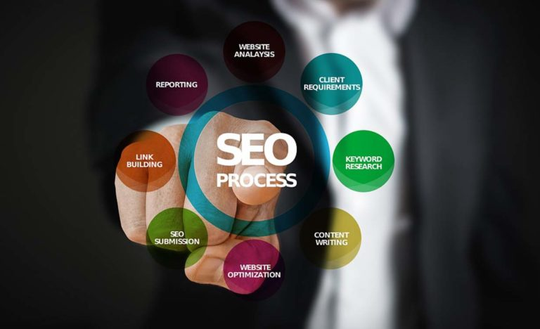

|  |
SEO - OPTIMIZACIJA WEB STRANICACilj svake stranice jeste da ima što više posjetilaca, bilo da je ti posjetioci pronalaze po imenu ili po ključnim riječima korištenim u okviru tekstova koji se pojavljuju na stranici. U tome glavnu ulogu igra optimizacija web-stranice ili SEO (Search Engine Optimization). SEO ili optimizacija web-stranice podrazumijeva poboljšanje pozicije web-stranice u rezultatima raznih Internet pretraživača, kao što su Google Chrome, Explorer, Bing itd. Najpopularniji pretraživač je svakako Google koji rangira web-stranice na osnovu različitih algoritama koji su uglavnom nepoznati široj javnosti.PROČITAJTE VIŠE Autor:Muratović Belmin |
 |
KAKO DO MAKSIMUMA VAŠE WEB STRANICE
Bilo da već imate poslovnu web stranicu ili tek krećete u izradu jedne, bitno je poduzeti neke korake koji će vašu web stranicu učiniti vrlo korisnim i profitabilnim predstavnikom tvrtke. Imati web stranicu je u današnje vrijeme potrebno i nužno, no uz sljedeće korake, vaša web stranica postat će vaš najbolji prodavač i višestruko će vam se isplatiti.
PROČITAJTE VIŠE Autor:Muratović Belmin |